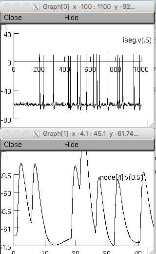

These files form the basis of simulations in
Holmes WR, Huwe JA, Williams B, Rowe MH, Peterson EH (2017) Models of utricular bouton afferents: role of afferent-hair cell connectivity in determining spike train regularity. J Neurophysiol 117:1969-1986 http://dx.doi.org/10.1152/jn.00895.2016
A number of these files, including some of the more clever algorithms, were adapted from work done by Jose Ambros-Ingerson for a different project. Morphology files for 4 vestibular bouton afferents, reconstructed from turtle, are included.
These scripts together with the simple GUI provided can be used directly to reproduce voltage traces in Figs 3-5 and data points in Figs 6-8 with only changing tstop. Tstop = 1000 ms here which is sufficient to illustrate runs that complete in a short amount of time. For the paper it was necessary to use tstop values of a few MINUTES in many cases in order to accumulate a large enough number of spikes to allow cv to be computed accurately. These simulations were run in batch mode and took days in some cases.
Usage:main-i6s-tnew.hoc
-- One hair cell to one afferent connectivity, synaptic conductance
constant or scaled by bouton diameter. Runs produce data points for Figs 6A, 7A, 7C, 8
main-i6s-hc.hoc
--One hair cell to one or more afferents connectivity, synaptic
conductance constant or scaled by bouton diameter. Runs produce
traces in Fig 5 and data points for Figs 6B, 7B, 7C, 8
main-i6sBKSK-tnew.hoc
--Same as main-i6s-tnew.hoc but with BK and SK conductances added.
Runs produce traces in Fig. 3 and data points for Fig 8
main-i6sBKSK-hc.hoc
--Same as main-i6s-hc.hoc except BK and SK conductances added. Runs
produce traces in Fig 4 and data points for Figs. 6C and 8